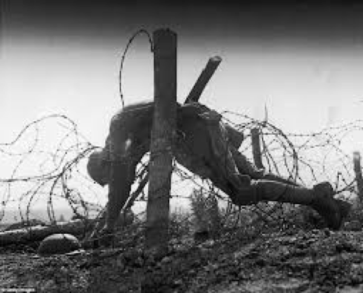
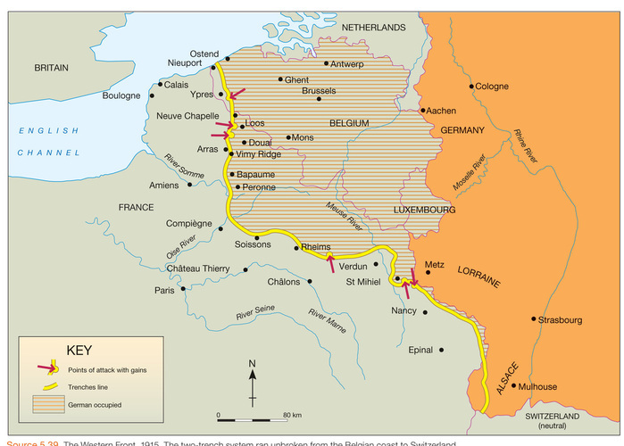
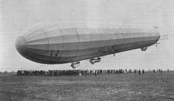
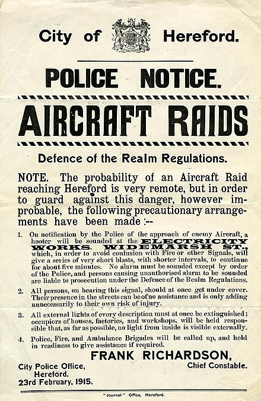
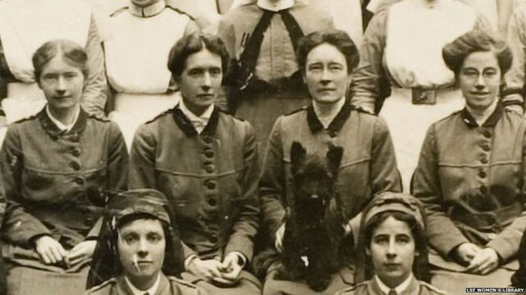
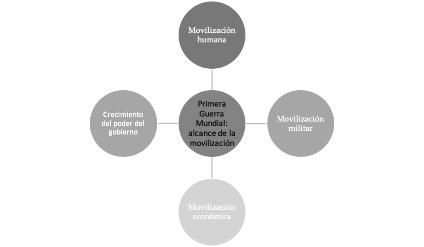
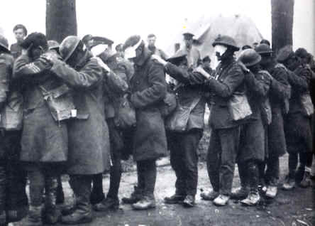

IB Docs (2) Team
IB Docs (2) Team

2. La Primera Guerra Mundial: Prácticas

La Primera Guerra Mundial es un estudio de caso interregional. Es también un ejemplo de una guerra en la que hay una total movilización de recursos humanos y económicos en algunos de los estados beligerantes.La práctica de redacción de ensayos para este estudio de caso, así como los videos y pruebas se pueden encontrar en las páginas separadas que se pueden ver a la izquierda.
Preguntas orientadoras:
¿Qué tipo de guerra fue la Primera Guerra Mundial?
¿Por qué no hubo una victoria "rápida" en la Primera Guerra Mundial?
¿Cuál fue la naturaleza de la lucha en tierra?
¿Cuál fue la naturaleza de la lucha en el mar?
¿Cuál fue la naturaleza de la lucha en el aire?
¿Cuál fue el impacto de la Primera Guerra Mundial en el frente interno?
¿Cuál fue el papel de la tecnología en la Primera Guerra Mundial?
1. ¿Qué tipo de guerra fue la Primera Guerra Mundial?
La Primera Guerra Mundial es un estudio de caso interregional. Es un ejemplo de guerra en el que se puede evaluar la importancia relativa de cada teatro de guerra: tierra, mar y aire para determinar su resultado. También es una guerra en la que la tecnología tuvo un efecto en la forma en que se libró la guerra, y en la que varios de los principales estados beligerantes movilizaron totalmente los recursos humanos y económicos.
Las grandes potencias de Europa entraron en guerra en agosto de 1914. Los gobiernos habían afirmado que la guerra era justa y que la guerra sería corta y que todo "terminaría para Navidad". Sin embargo, la Primera Guerra Mundial resultó ser una larga guerra de desgaste, librada en varios frentes. El entrenamiento ofensivo y las estrategias de los comandantes, combinados con la nueva tecnología defensiva de artillería pesada y ametralladoras, significaron que la guerra vio horribles bajas a una escala sin precedentes.
La guerra duró cuatro años, durante los cuales la mayor parte de los combates importantes tuvieron lugar en el Frente Occidental [que se extiende a lo largo de 320 kilómetros desde el Canal de la Mancha hasta los Alpes suizos], en el Frente Oriental de Alemania, en el que participan tanto Austria-Hungría como Rusia, y en los Balcanes, en la frontera italiana y en el Oriente Medio.
Tarea Uno
ATL: habilidades de pensamiento
Observa las fotos de las trincheras que puedes encontrar aqui
¿Qué puedes comprender a través de estas fotos sobre las dificultades de librar esta guerra?
¿Por qué esta guerra favorecía más a los defensores que a los atacantes?
2. ¿Por qué no hubo una victoria "rápida" en la Primera Guerra Mundial?

Alemania intentó evitar una "guerra en dos frentes" siguiendo su "Plan Schlieffen". El plan era derrotar rápidamente a Francia en el oeste y luego enviar tropas al este para enfrentarse a los ejércitos rusos en el este. El plan requería que los ejércitos alemanes se adentraran en el norte de Francia a través de la neutral Bélgica, avanzaran al oeste de París y luego voltearan hacia el este para derrotar a las principales fuerzas francesas que defendían la frontera alemana. Las tropas alemanas se dirigirían entonces al este para enfrentarse al ejército ruso que habría tardado varias semanas en movilizarse completamente.
Este mapa animado de la página web te ayudará a comprender la ruta del ejército alemán.
Como se puede ver en el video, el Plan Schlieffen fracasó. El avance alemán se llevó a cabo en la Batalla del Marne en septiembre de 1914.
Tarea Uno
ATL: Habilidades de investigación y pensamiento
Vé la primera parte del episodio 2 de La Gran Guerra 1914 - 1918 desde el minuto 3:40 segundos hasta el minuto 12:15. Toma notas y responde a las siguientes preguntas:
¿Cuál fue la contribución de Bélgica en el fracaso del Plan Schlieffen?
¿Por qué la invasión a través de Bélgica proporcionó una herramienta de propaganda para los Aliados? ¿Cuál fue la importancia de esta propaganda?
Después de la inesperada resistencia de Bélgica que frenó al ejército alemán por dos semanas, otros factores aseguraron el fracaso del Plan Schlieffen:
- Gran Bretaña, garante de la neutralidad belga a través del Tratado de Londres de 1839, entró en la guerra. La Fuerza Expedicionaria Británica desembarcó en Francia.
- Rusia se había movilizado más rápido de lo esperado y algunas fuerzas alemanas tuvieron que ser desplegadas hacia el este
- En París, los reservistas fueron enviados a reunirse con los alemanes en los famosos "taxis del Marne".
- Los alemanes tenían dificultades para mantener los suministros a sus fuerzas en Francia y se veían frenados por el agotamiento y la falta de alimentos.
Con el fracaso del Plan Schlieffen para lograr una rápida victoria, la guerra de movimiento se convirtió ahora en una guerra de estancamiento ya que ambos lados establecieron una línea de trincheras a lo largo de lo que se conoció como el Frente Occidental (ver video arriba).
3. ¿Cuál fue la naturaleza de la lucha en tierra?
Actividad de inicio
La película “1917”, de 2019, es excelente para dar una idea de la naturaleza de las trincheras y de la “tierra de nadie” en el Frente Occidental. Este es un tráiler, pero intenta ver la película completa.
Tarea Uno
ATL: Habilidades de investigación y pensamiento
Investiga UNO de los siguientes temas del "Frente Occidental":
- La tregua de Navidad
- La neurosis de guerra
- El pie de trinchera
- El trabajo de los mineros que cexcavando túneles bajo las trincheras
- Los sistemas de comunicación utilizados en las trincheras
- Los objetores de conciencia
- Motines y hombres fusilados por "cobardía".
Necesitas investigar el tema y hacer una breve presentación en uno de los siguientes formatos: una infografía, PowerPoint/Prezi o un folleto.
Presentarás brevemente estos temas al resto de la clase. Las presentaciones no deben durar más de 5 minutos.
La Primera Guerra Mundial no se limitó al Frente Occidental. La otra gran arena de lucha fue en el Frente Oriental que involucró a Rusia, Austria-Hungría, Alemania. La guerra aquí fue más móvil pero también devastadora en cuanto a las bajas humanas. La guerra también tuvo lugar en la frontera de Italia y Austria-Hungría, en los Balcanes y en Turquía y Oriente Medio.
Tarea dos
ATL: Habilidades de pensamiento
Mira el siguiente video para tener una visión general de la lucha en todos los frentes .
Tarea tres
ATL: Habilidades de pensamiento, investigación y comunicación
Dividan la clase en grupos de tres o cuatro estudiantes. Cada grupo debe investigar una de las siguientes áreas de la guerra y luego presentar sus hallazgos al resto de la clase. La presentación debe incluir mapas e imágenes, así como un análisis claro de las siguientes preguntas:
1. ¿Cuál fue la naturaleza de la lucha? (considere las cuestiones de si fue defensiva/ofensiva/trincheras involucradas/principales tipos de armamento)
2. ¿Cómo eran las condiciones?
3. ¿Por qué era difícil obtener la victoria?
4. ¿Qué nuevas armas/tácticas fueron desarrolladas por cada bando para tratar de abrirse paso y ganar?
5. ¿Qué factores causaron la derrota de las potencias del Eje en esta área en 1918 ?
Grupo 1 Investiga eventos en el Frente Occidental
Grupo 2 Investiga eventos en en el Frente Oriental
Grupo 3 investiga los otros frentes: Balcanes, Turquía, Italia, África y Asia
Haga clic en el ojo para los eventos principales que cada grupo debe considerar al investigar su área.
Esta tarea puede ser usada como una extensión o seguimiento de la última
Grupo 1 : Investiga los siguientes eventos del frente occidental
1915 | Estancamiento | Neuve Chapelle; Loos; Champagne e Ypres en abril Uso de gas tóxico |
1916 | Matanza | Verdún y “desangrar al enemigo hasta le muerte” (General Falkenhayn) |
1917 | Ingreso de EE.UU | EE.UU. entra en la guerra en abril de 1917 |
1918 | Derrota | La ofensiva Ludendorff y la contraofensiva de Foch. El armisticio del 11 de noviembre |
Grupo 2 : Investiga los siguientes eventos del frente oriental
1914 | Derrotas rusas | Victorias tempranas rusas sobre Austria; derrotas rusas en Tannenberg y los lagos masurianos |
1915 | Retirada | La línea defensiva rusa de Riga en el Báltico a Rumania en los Balcanes. Bloqueo turco a los Dardanelos. |
1916 | Ofensiva fallida | Ofensiva del general Brusilov en junio; impacto de Austria-Hungría y Rusia |
1917 | Revoluciones | Las revoluciones de febrero y octubre; Tratado de Brest Litovsk. |
Grupo 3 : Investiga los siguientes eventos en otros frentes
1914-18 | Los Balcanes | Fracaso austrohúngaro en Serbia 1914; Bulgaria entra en la guerra: ofensiva conjunta austrohúngara y búlgara 1915; Rumania se une a los aliados 1916; intento aliado de ayudar a Rumania en Salónica; rendición búlgara en septiembre de 1918 |
1915-18 | Frente italiano | Tratado de Londres; batalla de Caporetto octubre 1917; la batalla de Vittorio Veneto octubre 1918; armisticio del 3 de noviembre 1918 |
1914-18 | Turquía y Oriente Medio | Gallipoli y el “plan para ganar la guerra”; campaña mesopotámica, campaña a través de Palestina; T.E. Lawrence y la campaña de guerrilla árabe; batalla de Megido, armisticio de noviembre 3 1918 |
1914-17 | La guerra en África y Asia | La táctica de guerrilla de von Lettow-Vorbeck en África del este; derrota alemana en África en 1917; ocupación de las colonias alemanas, las fuerzas neozelandesas en Samoa; las fuerzas australianas en Nueva Guinea |
Tarea cuatro
ATL: Habilidades de comunicación
Formen grupos mixtos con un representante de cada una de las áreas de investigación de la tarea anterior, es decir, debe haber un miembro de cada una de las tres áreas de investigación.
Deben elaborar un infográfico que dé una visión general del curso de la Primera Guerra Mundial. Debería haber vínculos claros entre las campañas, las batallas, las pérdidas y los acontecimientos centrales.
4. ¿Cuál era la naturaleza de la lucha en el mar?
Desde el principio de la guerra, estaba claro que el control de los mares era crucial para ambos bandos. Gran Bretaña dependía del mar para transportar tropas y traer suministros desde su imperio y a través del Atlántico. Winston Churchill (que sirvió como Primer Lord del Almirantazgo) dijo que el Almirante Jellicoe, el comandante de la flota británica podría haber perdido la guerra en una tarde. Alemania también necesitaba alimentos y otros suministros del extranjero.
Tarea Uno
ATL: Habilidades de pensamiento y autogestión
- Elabora una línea de tiempo que muestre los principales eventos de la guerra en el mar. Anota las acciones de los aliados por encima de la línea y las acciones de los alemanes por debajo de la línea. Puede que quieras distinguir también entre las acciones de las flotas y los submarinos usando diferentes colores.
- Haga clic en el ojo para ver los eventos que podrías usar para la línea de tiempo.
- ¿Qué factores permitieron a Gran Bretaña disfrutar de la supremacía de los mares?
- Marina Real destruyó uno de los principales escuadrones alemanes en la Batalla de las Islas alvinas/Falklands en 1914.
- Los aliados bloquearon los puertos alemanes
- Los buques de la marina británica hicieron valer el derecho de inspeccionar barcos neutrales para asegurarse de que Alemania y sus aliados no se abastecieran a través de otros países.
- El uso de submarinos y minas marinas cambió la guerra naval.El torpedo y el submarino hicieron que los grandes acorazados fueran vulnerables y casi indefensos
- Alemania lanzó una campaña de submarinos en el Atlántico para bloquear los suministros británicos
- Un ataque con torpedos alemanes hundió el transatlantico Lusitania, con una pérdida de 1.000 vidas, incluyendo 128 estadounidenses. Este fue un factor que contribuyó al ingreso de EE.UU. a la guerra
- Tras reducir los ataques de submarinos después del hundimiento del Lusitania, Alemania volvió a reanudarlos sin restricciones en febrero de 1917 en un intento de hacer que Gran Bretaña y Francia se rindieran.
- En abril de 1917, Gran Bretaña tenía suministro de maíz para solo 6 semanas y había perdido cerca de 850.000 toneladas de transporte sólo durante ese mes.
- Gran Bretaña implementó el sistema de convoyes que facilitó a los buques mercantes tener una escolta naval. Para octubre de 1917, un total de 99 convoyes habían llegado a puerto en forma segura y con sólo 10 buques perdidos.
- A medida que aumentaba la producción de los astilleros americanos, la producción de embarcaciones comenzó a exceder las pérdidas
- Se diseñaron y desplegaron redes submarinas a través de las entradas del Canal de la Mancha, lo que obligó a los submarinos a ir hacia el norte alrededor de la cima de Gran Bretaña, reduciendo así seriamente su tiempo operativo en la zona de guerra.
- La tecnología armamentística también ayudó a derrotar la campaña de submarinos alemana: el dispositivo de escucha pasiva de hidrófonos captaba los ruidos del motor de los submarinos. También se desarrollaron explosivos de profundidad para atacar a los submarinos. Se desarrolló el sonar y los franceses también utilizaron tecnología basada en los ecos: ambos permitían la detección de los submarinos.
- En 1918, 69 submarinos fueron destruidos y los alemanes no pudieron reemplazarlos.
- Sólo se libró una gran batalla entre las principales flotas británicas y entre el 31 de mayo y el 1 de junio de 1916. En la batalla de Jutlandia, el plan alemán era atraer a la flota británica desde su base para luego atacarla por fuerzas alemanas numéricamente superiores.Los británicos habían descifrado las señales de radio alemanas y enviaron más barcos de los que los alemanes habían previsto.Los alemanes hundieron 14 barcos británicos y sólo perdieron 11.Sin embargo, la flota alemana se retiró a Kiel durante el resto de la guerra, lo que dejó a los británicos en control de las aguas de navegación.
- La continua supremacía naval británica significaba que podía transportar 8,5 millones de tropas a través del Imperio Británico. En el último año de la guerra ayudó a transportar soldados estadounidenses por el Atlántico y mantuvo abiertas las rutas de suministro a los aliados.
El hecho de que la marina británica disfrutara de la supremacía en el curso de la guerra fue fundamental para permitirle mover 8,5 millones de tropas a través del Imperio Británico, así como tropas y suministros de Gran Bretaña a través del Canal de la Mancha a Francia. Las importaciones continuaron llegando a Gran Bretaña, y los Aliados pudieron establecer y mantener un bloqueo devastador sobre Alemania. En última instancia, también fueron capaces de sostener el sistema de convoyes y transportar hombres y equipos americanos a Europa para las batallas finales.
¿Cuál fue la naturaleza de la lucha en el aire?

Tarea Uno
ATL: Habilidades de investigación y pensamiento
Investiga los siguientes aspectos de la guerra aérea y toma notas breves sobre las siguientes áreas. (Puede ser útil utilizar estos articulos:
https://reasilvia.com/2016/05/aviacion-primera-guerra-mundial/
https://www.hisour.com/es/aviation-technology-in-world-war-i-37789/
- Zepelines
- Aviones de reconocimiento
- El desarrollo de las "peleas de perros" y los ases
- El impacto de la guerra aérea en el resultado de la guerra
6. ¿Cuál fue el impacto de la Primera Guerra Mundial en el frente interno?

James Sheehan, el Monopolio de la Violencia (Faber & Faber, 2008)
El impacto de los combates en la población civil
Por el impacto del Plan Schlieffen y el movimiento de tropas a través de Bélgica, los ciudadanos fueron afectados desde el comienzo de la guerra. Esto se debió en parte a las tecnologías disponibles que permitieron que los civiles de ambos lados se convirtieran en objetivos. París fue bombardeada desde una distancia de 126 kilómetros por el enorme cañón alemán conocido como "Long Max", mientras que primero los zepelines, y más tarde los aviones, hicieron incursiones en Gran Bretaña. Los aviones británicos también infligieron graves daños a las fábricas y ciudades alemanas en el último año de la guerra.
En el frente oriental, debido a los grandes avances y retrocesos, los civiles se vieron atrapados en batallas reales de una manera que no ocurrió en el frente occidental donde, después de las batallas iniciales, los civiles pudieron mantenerse alejados de los combates reales.
Sin embargo, no fue sólo la nueva tecnología la que provocó víctimas civiles. En muchas zonas, los civiles fueron blanco de los ejércitos sobre el terreno. Esto ocurrió en Bélgica, donde se tomaron represalias contra los que se resistían al avance alemán. También se dio extensamente en el Frente Oriental. En Serbia, miles de civiles fueron masacrados por las tropas austrohúngaras, mientras que los grupos minoritarios - judíos, romaníes, húngaros y turcos - fueron atacados o deportados por Rusia durante la guerra.
Genocidio
La Primera Guerra Mundial también fue testigo del primer genocidio. La propaganda turca de la época presentaba a los armenios como saboteadores y una quinta columna prorrusa. Cientos de miles de armenios murieron de hambre y sed cuando los turcos otomanos los deportaron en masa desde Anatolia oriental al desierto de Siria y a otros lugares en 1915-1916.
El impacto de la guerra económica en los civiles
Ambos bandos trataron de interrumpir las rutas comerciales del otro para impedir que los alimentos y las materias primas vitales pasaran. Sembrando campos de minas en el mar y atacaron los barcos mercantes enemigos con submarinos o buques de guerra. El bloqueo británico tuvo un efecto devastador en Alemania, causando una desesperada escasez de alimentos y contribuyendo a la derrota de Alemania en 1918. El uso de la guerra submarina por parte de Alemania también sometió a los civiles británicos a la escasez y Rusia sufrió como resultado del bloqueo de los Dardanelos. El racionamiento se introdujo en muchos países.
El crecimiento del poder del gobierno
Los civiles experimentan otros cambios con la creciente centralización del poder:
- En Gran Bretaña, la Ley de Defensa del Reino (DORA) de 1914 dio al gobierno amplios poderes para vigilar muchos aspectos de la vida diaria.
- En Francia, el presidente Raymond Poincaré proclamó el "estado de sitio" y puso ocho departamentos del gobierno (que más tarde pasaron a ser 33) bajo la ley militar y el control del comandante en jefe Joffre.
- En Alemania, el poder ejecutivo fue otorgado a los comandantes generales adjuntos de los 24 distritos militares alemanes
- En Rusia, el Zar reafirmó los poderes autocráticos y gobernó sin la Duma
Estos poderes se utilizaron para asegurar el control gubernamental sobre los recursos humanos, por ejemplo, introduciendo el reclutamiento y fiscalizando la producción. Por ejemplo, Gran Bretaña nacionalizó la industria. Los gobiernos también intentaron controlar la moral mediante la producción de propaganda.
Tarea Uno
ATL: habilidades de pensamiento
Mira el episodio 3 (Guerra Total) de La Gran Guerra desde el minuto 25:40 hasta el minuto 32 y toma notas sobre el impacto de la guerra en el papel de las mujeres en Gran Bretaña.
Tarea dos
ATL: Investigación y habilidades sociales
Investiga y toma notas sobre los siguientes temas. (Puede ser útil consultar este artículo en el sitio web de la Biblioteca Británica. También este artículo sobre el Home Front en Gran Bretaña con fuentes contemporaneas). Asegúrate de tener ejemplos para cada tema de dos países, cada uno de una región diferente.
- El impacto de los combates sobre los civiles (considera la invasión alemana inicial a través de Bélgica, el impacto de la guerra aérea, los combates en el Frente Oriental)
- El impacto de la guerra económica (considera el impacto de la guerra submarina y los bloqueos impuestos por ambos bandos)
- El papel de los civiles en el trabajo de guerra (considera el papel de las mujeres como parte de la fuerza de trabajo - ver tarea más abajo)
- El crecimiento del poder del gobierno (considera los esfuerzos de los gobiernos para controlar la economía, la vida de los ciudadanos, las noticias y la información)
A partir de la investigación, discutan en clase qué países tuvieron más éxito en la movilización de su fuerza de trabajo y su economía. ¿Cómo afectó esto al resultado de la guerra?
Tarea tres
ATL: Habilidades de investigación.
Basándose en su investigación anterior, es importante que tenga claro el papel de la mujer en dos regiones diferentes. (por ejemplo, los EE.UU. y Gran Bretaña)
Esta es una entrevista a la periodista Kate Adie acerca de su libro sobre las mujeres que lucharon en la Primera Guerra Mundial. También hay un programa de la BBC que hizo sobre el mismo tema. Lo puedes encontrar en YouTube, pero tienes que pagar por ello desafortunadamente!

También hay que destacar el libro de reciente publicación “Endell Street” de Wendy Morris. Trata sobre dos mujeres sufragistas que establecieron un hospital en Londres durante la Primera Guerra Mundial para los soldados heridos. El hospital fue atendido enteramente por mujeres. Es otra de esas historias ocultas sobre el papel de la mujer en la guerra y un gran ejemplo del trabajo realizado por las mujeres (que se les impidió continuar después de la guerra).
Tarea cuatro
ATL: habilidades de investigación y pensamiento
La tarea anterior, junto con la investigación previa sobre el desarrollo de nuevas armas, debería dar una idea del alcance de la movilización humana y material en Gran Bretaña y Alemania durante la Primera Guerra Mundial, y por qué el conflicto fue conocido como una Guerra Total.
Completa un mapa mental para resumir el alcance de la movilización humana, militar y económica que incluya ejemplos de países de diferentes regiones.

Tarea cinco
ATL: habilidades de pensamiento
Usa el mapa mental para desarrollar un plan de ensayo para la siguiente pregunta:
Compare y contraste el alcance de la movilización en dos países beligerantes de diferentes regiones en una guerra del siglo XX.
7. ¿Cuál fue el papel de la tecnología en la Primera Guerra Mundial?

Tarea Uno
ATL: Habilidades de pensamiento
Vea el siguiente video como una breve introducción a los desarrollos tecnológicos de la Primera Guerra Mundial.
1. ¿Qué ejemplos se dan de los desarrollos tecnológicos?
2. ¿Por qué tuvieron lugar estos desarrollos?
3. ¿Qué fue lo más importante de la Primera Guerra Mundial en términos de tecnología?
Tarea dos
ATL: Habilidades de autogestión
De a dos, investiguen el papel de la tecnología en cada teatro de guerra y evalúen cómo evolucionó la misma durante el curso de la guerra. Deberán considerar el impacto de cada tecnología nueva/en evolución en la forma en que se libró la guerra y luego evaluar su impacto en el resultado de la guerra.
Copia y completa la siguiente tabla con sus conclusiones.
Haga clic en el ojo para un recordatorio de las tecnologías que debe considerar:
Tierra:
Ametralladora
Granadas
Artillería pesada
Guerra química
Tanques
Mar:
Submarinos
Minas marinas y torpedos
Dispositivos de escucha pasiva; hidrófonos
Detonaciones en profundidad
Sonar/eco de alcance
Aire:
Dirigibles
La evolución de los aviones durante el curso de la guerra
Teatro de guerra | Nueva tecnología | Impacto en el combate | Impacto en el resultado de la guerra |
Tecnología de tierra | |||
Tecnología de mar | |||
Tecnología de aire |
Tarea tres.
ATL: Habilidades de pensamiento
¿Por qué, según la siguiente fuente, hubo una revolución en la guerra terrestre durante la Primera Guerra Mundial?
En 1914 el soldado británico fue a la guerra vestido como un guardabosques con una gorra suave, armado sólo con rifle y bayoneta. En 1918 fue a la batalla vestido como un obrero industrial con un casco de acero, protegido por un respirador contra el gas venenoso, armado con armas automáticas y morteros, apoyado por tanques y aviones de tierra y precedido por un aluvión de artillería de intensidad aplastante. La potencia de fuego sustituyó a la mano de obra como instrumento de victoria. Esto representó una revolución en la conducción de la guerra".
John Bourne en Charles Townshend (ed.), The Oxford history of Modern War (OUP) 2005
¿Qué factores llevaron a la derrota de Alemania y sus aliados?
Los historiadores difieren en sus perspectivas sobre las razones de la derrota de las Potencias Centrales en la Primera Guerra Mundial. Por ejemplo, John sugiere que la guerra naval en el Atlántico fue decisiva en el resultado de la guerra. Mientras que Alexander Watson sugiere que la guerra en tierra condujo a la derrota de Alemania, "...durante el curso de 1918, la tensión acumulada y la desesperanza de su situación había quebrantado la voluntad del ejército de seguir luchando". (Alexander Watson, ‘Stabbed at the Front’, History Today, 2008, p.22.)
Akira Iriye sugiere, en The Globalising of America 1913-1945, (1993) que "la participación americana significó la derrota de las ambiciones alemanas" debido a su abrumador potencial económico.
Las tareas que se exponen a continuación permitirán examinar una serie de factores diferentes que influyeron en el resultado de la guerra: la inestabilidad interna de las potencias centrales , los errores estratégicos de las potencias centrales, las debilidades económicas, los puntos fuertes de los Aliados, el papel de los Estados Unidos.
Tarea Uno
ATL: Habilidades de investigación y pensamiento
Inestabilidad interna en las Potencias Centrales:
Investiga una de las siguientes potencias centrales durante la Primera Guerra Mundial. Tendrás que hacer una breve presentación de 5 minutos sobre la inestabilidad interna en el país y explicar por qué esto pudo haber sido un factor contribuyente a la victoria final de los Aliados en 1918.
- Inestabilidad interna en Alemania 1914-18
- Inestabilidad interna en Austria-Hungría 1914-18
- Inestabilidad interna en el imperio otomano/turco 1914-18
- Inestabilidad interna en Bulgaria 1914-18
Tarea dos
ATL: Habilidades de pensamiento
Lee este artículo "América en la Primera Guerra Mundial " de la historiadora Jennifer D Keene de la Biblioteca Británica.
Toma notas sobre:
- Razones para la entrada de los EE.UU. en la guerra
- Propaganda de los Estados Unidos
- El papel de los soldados estadounidenses en el Frente Occidental
 Twitter
Twitter
 Facebook
Facebook
 LinkedIn
LinkedIn